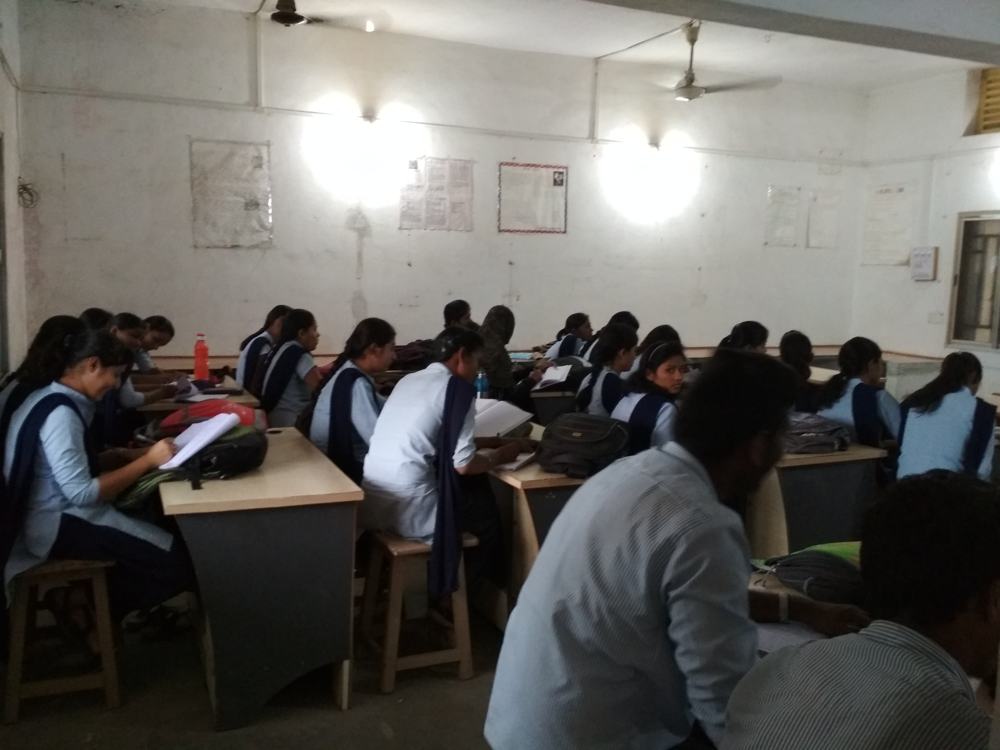
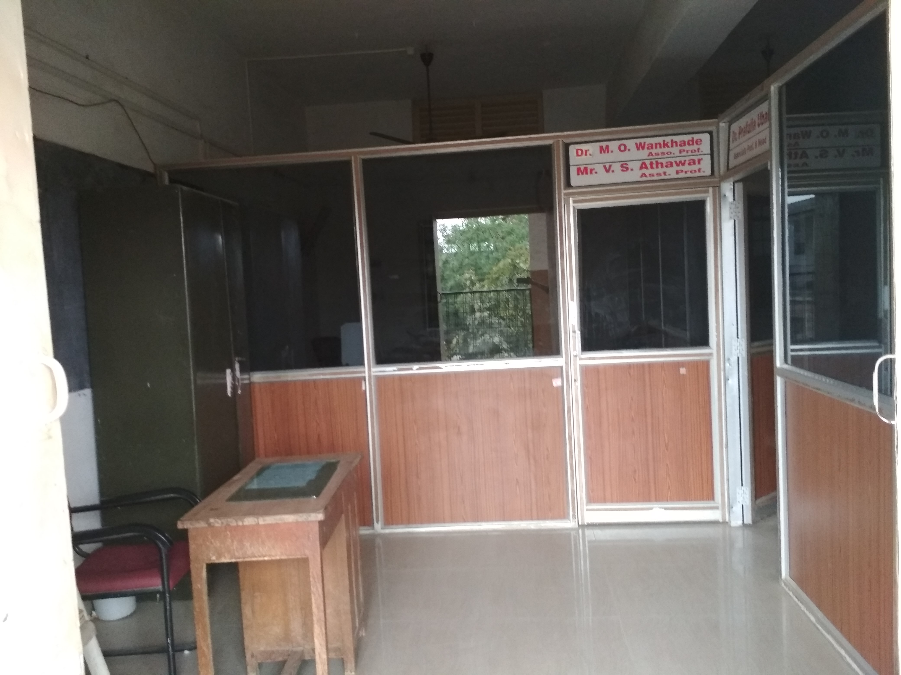
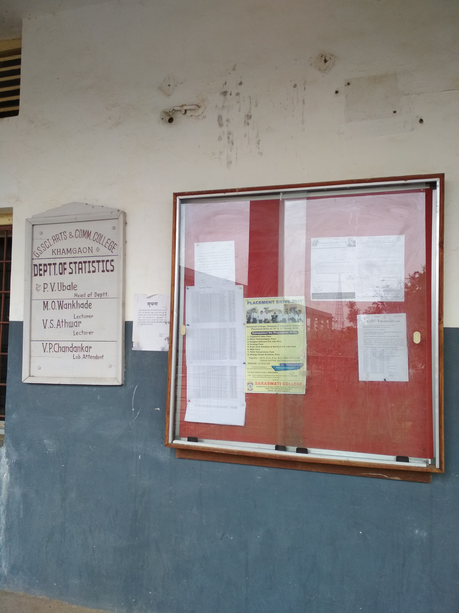
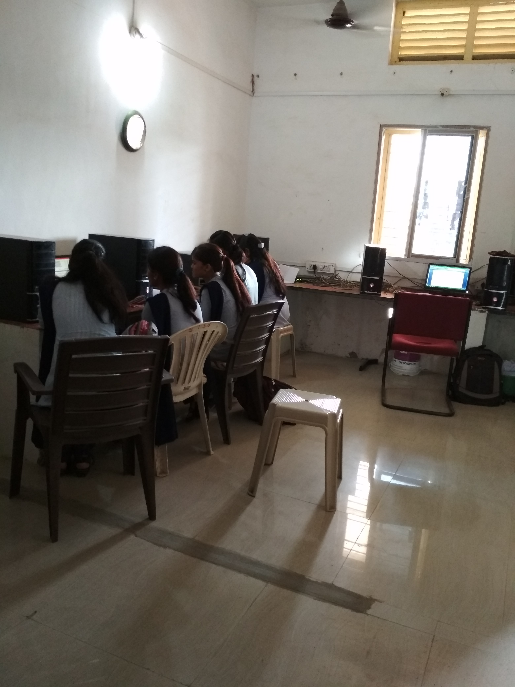

Student Information:
| Year |
Number of Admission in 2018 |
| B.Sc.I |
70 |
| B.Sc.II |
57 |
| B.Sc.III |
35 |
Facility Provided:
1.Giving remedial teaching to every poor learners.
2.Improving practical knowledge of every student by explaining them practical on computers.
3.Teaching the students to draw practical knowledge using MS-Excel and MINITAB Software.
4.Giving Attention towards each and every student and trying to solve their problem personally.
ExtraCurricularActivities:
1.Field trip of the students
2.Encouraging students for doing statistical survey
3.Giving the idea of statistical packages in practical
4.Encouraging student for participate in seminar and various statistical activities oranganised by other colleges in Amravati University.
Infrastructure of Lab:



